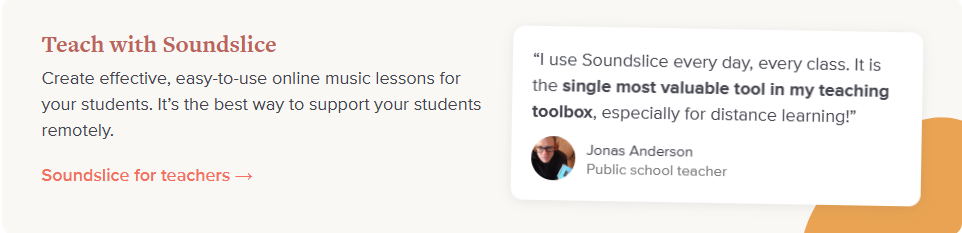
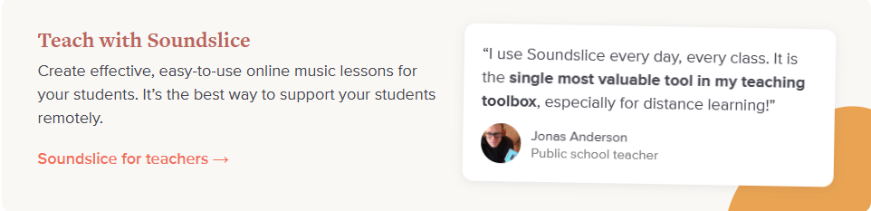
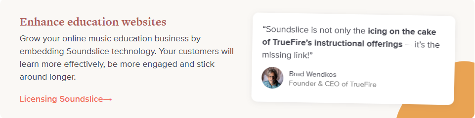
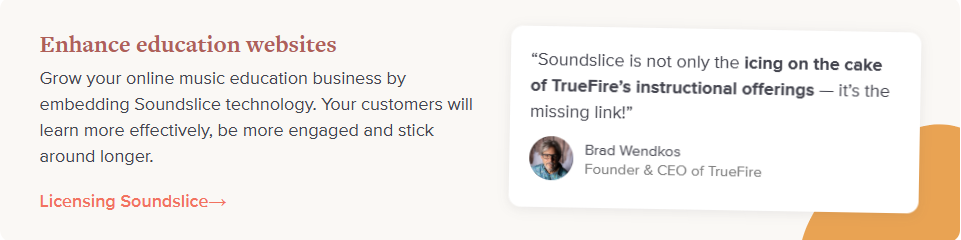

Convert ASCII into readable sheet music
this is just the beginning! discover how soundslice can change your way of learning
cost = 0$
Use it for free. Our full-featured notation and tab editor is free for basic usage, and there's no limit on how much music you can have.
People use Soundslice to practice, teach, sell, embed and more…
 

 
